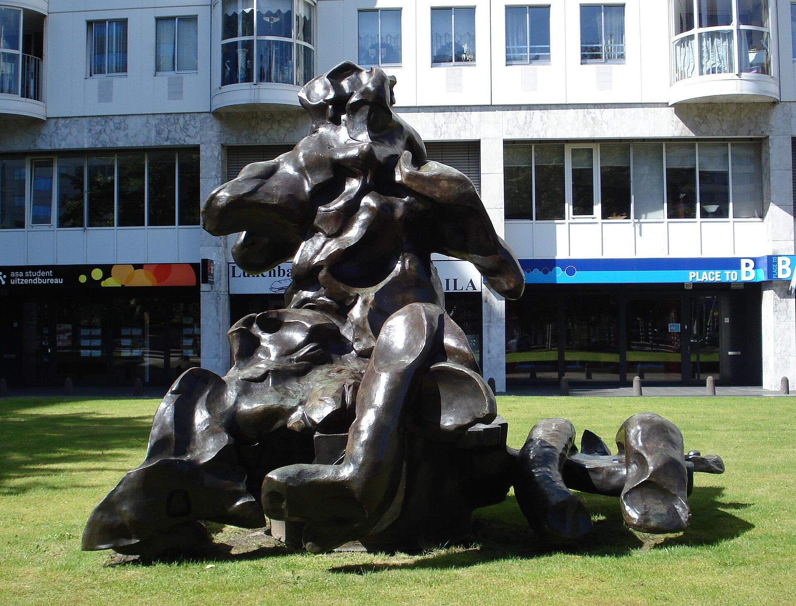

다운로드 필요
대표 화가
잭슨 폴록, 《가을 리듬: 넘버 30》 · 추상표현주의 · 미국
선정 이유 폴록은 바닥에 놓은 캔버스 주위를 움직이며 그린 행위를 화면 전체의 구조로 만든 액션 페인팅의 기준점이다.
중심과 가장자리의 위계를 없앤 선의 그물이 거대한 화면을 가득 덮는다. 물감을 붓고 흘린 흔적은 우연만이 아니라 몸의 거리, 속도, 반복이 기록된 결과여서 제작 행위 자체가 작품의 의미가 된다.
Abstract Expressionism
상세 학습
추상표현주의는 제2차 세계대전 뒤 뉴욕에서 대형 화면, 추상, 제작 행위와 관람 경험을 새롭게 결합한 서로 다른 화가들의 흐름이다. 액션 페인팅과 색면회화는 한 가지 붓질의 변형이 아니라 화면을 경험하는 두 방향이다.
초현실주의의 자동기술과 유럽 추상을 받아들였지만 대형 화면과 전면적 구성으로 확장했고, 팝아트와 미니멀리즘은 그 영웅적 몸짓과 개인적 표현에 반응했다.
흔한 오해: 즉흥적으로 보인다고 통제 없이 한 번에 만든 그림은 아니다. 재료의 점도, 동작, 층, 크기와 관람 거리를 세심하게 조직한 작품이 많다.
추상표현주의의 시대적 배경과 시각적 특징을 국가별 전개 속에서 살펴본다.
선정 이유 폴록은 바닥에 놓은 캔버스 주위를 움직이며 그린 행위를 화면 전체의 구조로 만든 액션 페인팅의 기준점이다.
중심과 가장자리의 위계를 없앤 선의 그물이 거대한 화면을 가득 덮는다. 물감을 붓고 흘린 흔적은 우연만이 아니라 몸의 거리, 속도, 반복이 기록된 결과여서 제작 행위 자체가 작품의 의미가 된다.

더 볼 이유 드 쿠닝은 액션 페인팅의 격렬한 붓질이 인체 이미지와 공존할 수 있음을 보여 준다.
긁고 덧칠한 흔적과 반복 수정은 제작 행위 자체를 드러내는 액션 페인팅의 특징이다. 추상과 인물 형상을 끝까지 긴장 관계에 둔 것이 드 쿠닝만의 특성이다.
더 볼 이유 클라인은 액션 페인팅의 신체적 붓질을 흑백의 거대한 구조로 압축한 화가다.
검은 획이 흰 바탕을 가르며 제작 행위와 화면의 긴장을 동시에 드러낸다. 서예처럼 보이지만 작은 스케치를 확대해 충돌하는 건축적 힘으로 바꾼 점은 클라인만의 특성이다.
더 볼 이유 크래스너는 액션 페인팅의 몸짓을 콜라주와 반복적인 자기 수정, 유기적 리듬으로 확장한 화가다.
큰 곡선과 겹치는 색이 화면 전체에서 움직여 전면적 구성이라는 사조의 특징을 드러낸다. 자신의 이전 작품을 잘라 다시 조립하며 변화 자체를 방법으로 삼은 점은 크래스너만의 특성이다.
선정 이유 로스코의 떠 있는 색면은 제스처보다 색의 깊이와 관람 경험을 앞세운 색면회화의 차이를 즉시 보여 준다.
가장자리가 흐릿한 두 색면은 화면 앞에 떠 있거나 안으로 스며드는 듯 보인다. 구체적 이야기를 지우고 큰 크기와 미세한 색의 층만 남겨 관람자의 감정과 지속적인 응시를 작품의 일부로 만든다.
더 볼 이유 뉴먼은 색면회화가 거대한 단색장과 최소한의 수직선으로 숭고한 경험을 만드는 방식을 보여 준다.
넓은 붉은 색면이 관람자의 시야를 감싸는 점에서 색면회화의 몰입성이 드러난다. 화면을 가르는 집이라 부른 수직 띠로 색의 연속성과 인간적 척도를 동시에 만든 것이 뉴먼만의 특성이다.
더 볼 이유 스틸은 색면회화가 넓은 색의 장과 갈라진 가장자리만으로 숭고한 긴장을 만들 수 있음을 보여 준다.
거대한 색면이 수직으로 찢기듯 맞물려 관람자의 시야를 압도한다. 풍경이나 인물의 암시 없이 색을 지층과 불꽃 같은 힘으로 만든 점은 스틸만의 특성이다.
더 볼 이유 프랭컨탤러는 색면회화의 넓은 장을 묽은 물감이 캔버스에 스며드는 방식으로 새롭게 열었다.
경계가 번지는 색 얼룩은 붓질과 바탕을 분리하지 않고 대기처럼 펼친다. 스테인 기법으로 다음 세대 색면 추상의 밝고 개방적인 공간을 만든 점은 프랭컨탤러만의 특성이다.